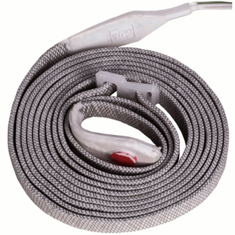

-

Нагревательная лента со встроенным терморегулятором (ЭНГЛ-1-ТК) -
Нагревательная лента со встроенным терморегулятором (ЭНГЛ-1-ТК)
Нагревательная лента со встроенным терморегулятором (ЭНГЛ-1-ТК)
В её основе лежат восемь нагревательных жил из проволоки высокого сопротивления. Снаружи нагреватели покрыты водонепроницаемой оболочкой из силиконовой резины, из которой так же выполнены концевые опрессовки.
Нагревательная лента ЭНГЛ-1-ТК – представляет собой законченное изделие с низкотемпературными выводами и герметичными наконечниками. Лента выпускается фиксированных размеров и мощностей и не подлежит резке в размер. Монтаж изделия прост и не требует никаких специальных инструментов и навыков. ЭНГЛ-1-ТК имеет встроенный терморегулятор, который автоматически поддерживает режим включения при +15°С и выключения при +20°С
Электронагревательная лента (ЭНГЛ-1-ТК) используется для обогрева почвы и (или) воздуха в теплицах, парниках, зимних садах с целью создания комфортных условий для выращивания растений.
- Предохраняет растения и рассаду от гибели в результате заморозков
- Ускоряет созревание сельскохозяйственных культур
- Увеличивает период сбора урожая
- Создает условия для раннего сбора урожая
- Способствует выращиванию теплолюбивых растений
- Позволяет увеличить количество и качество собираемого урожая